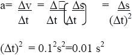

| Objetivo: |
Calcular la aceleración del carro para experimentos sobre la pista inclinada y determinar la ley de la distancia para el movimiento acelerado.
|
| |
| Introducción: |
| Después del movimiento rectilineo uniforme, el tipo de movimiento más sencillo que tenemos, es uniformemente acelerado. En éste, la velocidad no es una constante, sino que va cambiando de forma uniforme, ya sea que aumente o disminuya; razón por le cual aeste tipo de movimiento también se le llama inuformemente variado.
El movimiento uniforme acelerado es aquel en el cual la velocidad se incrementa en cantidades iguales y en tiempos iguales. |
|
|
| Desarrollo Experimental: |
|
Montaje de acuerdo a la ilustración (Figura 1).
Preparación:
- Colocamos la pista sobre la mesa y el carrito para experimentos junto con tres pesas ranuradas sobre la pista. La masa del carrito es de 200g.
- Colocamos la varilla de soporte de 10 cm. en la nuez redonda. Elevamos un poco (aproximadamente 6 cm.) un extremo de la pista con ayuda de la varilla de soporte.
- Sobre el extremo elevado colocamos el generador de marcas de tiempo. Sobre el otro extremo de la pista colocamos el jinete, el cual deberá evitar que el vagón ruede hacia abajo.
- Tiramos a través del generador de marcas de tiempo una cinta de papel metalizado de aproximadamente 1 m de longitud y la fijamos al carrito con ayuda de una etiqueta adhesiva.
- Aseguramos el otro extremo de la cinta registradora a la pinza de cocodrilo del generador de marcas de tiempo.
- Conectamos el generador de marcas de tiempo a una tensión alterna de 1,5v.
- Deslizamos el vagón con la cinta completamente hasta el generador.
- Directamente frente al vagón colocamos un jinete para que lo detenga.
- Conectamos el generador de marcas de tiempo a una tensión de 1,5v.
Experimento 1 y 2:
Justamente antes de soltar el vagón ponemos la llave del generador en posición 100ms. El carrito se mueve aceleradamente
sobre la pista inclinada y se detiene al final de ésta por el jinete.
Retiramos la cinta registradora del soporte.
Medimos los intervalos entre las marcas en la cinta y los anotamos. Los intervalos corresponden a las distancias recorridas en
cada décima de segundo, las cuales aumentan uniformemente.
Aumento de la distancia cada décima de segundo: ____ mm. |
| Resultados y Conclusiones: |
|
Experimento 1:
Para obtener la aceleración a partir de lo anterior, debemos reflexionar lo siguiente: la aceleración es el aumento de la velocidad en
el intervalo de tiempo correspondiente. El aumento de la velocidad se obtiene como el aumento de la distancia en el intervalo de
tiempo. Un intervalo de tiempo dura 0,1 seg.
Para la aceleración es válido:

Por lo tanto, debemos dividir el cambio de la distancia entre 0,01 o multiplicarlo por 100.
La aceleración constante fue de ______m/s2
Experimento 2
1) Repetimos el experimento, pero esta vez en la posición" 10 ms", con lo que obtenemos una marca cada centésima de segundo.
Al principio, los puntos se encuentran muy cerca unos de otros. Tan exactamente como es posible, intentamos contar los primeros
10 puntos (podemos comenzar aquí con 1", ya que la primera marca no es posible colocarla exactamente al principio del
movimiento sino un poco más tarde).
2) Entonces contamos siempre 10 marcas más adelante y así marcamos el recorrido durante las décimas de segundo.
3) Medimos la distancia total desde el punto de partida (p. ej. 5, 19, 42, 84 mm, etc.) y la dividimos entre el cuadrado del tiempo
(0,01; 0,04; 0,09;...s).
¿Indican todos los cocientes una relación con la velocidad?.
Conclusiones:
Los cocientes s/t2 nos dan la mitad de la aceleración.
La ley de la distancia es la siguiente:
s= (a/2) t 2
|
|
|
|